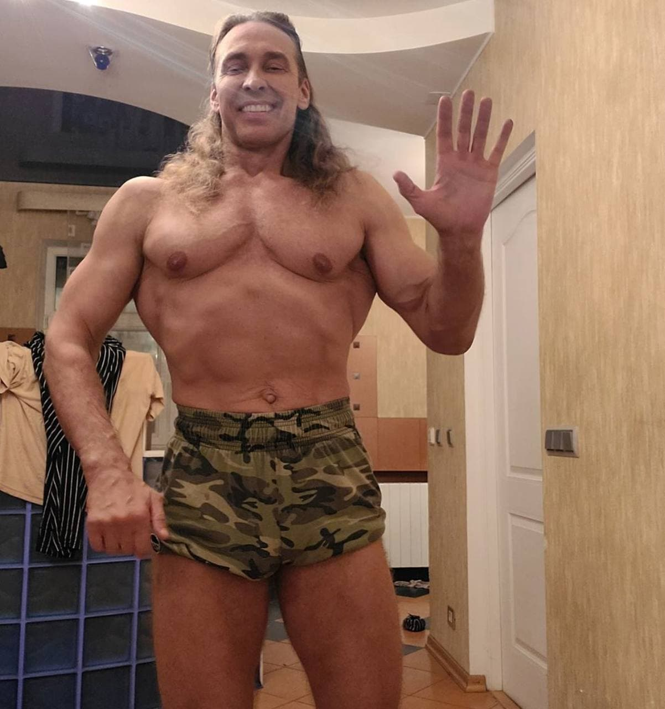
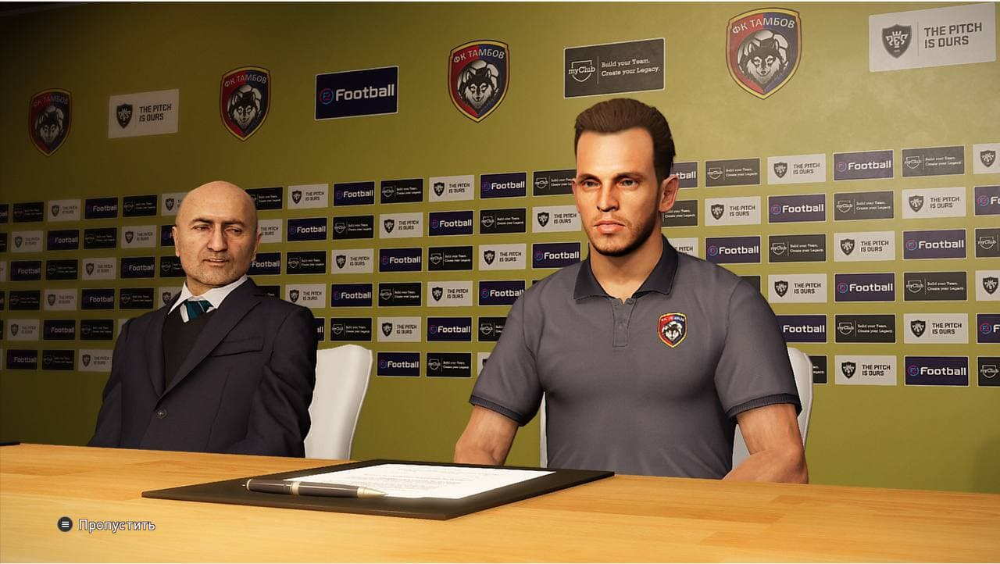
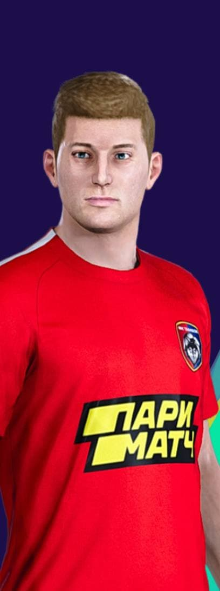
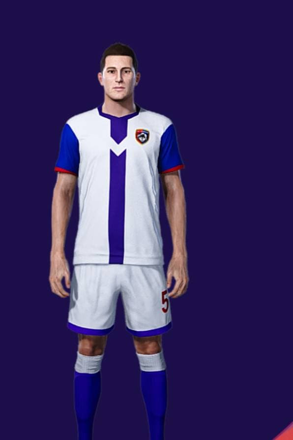
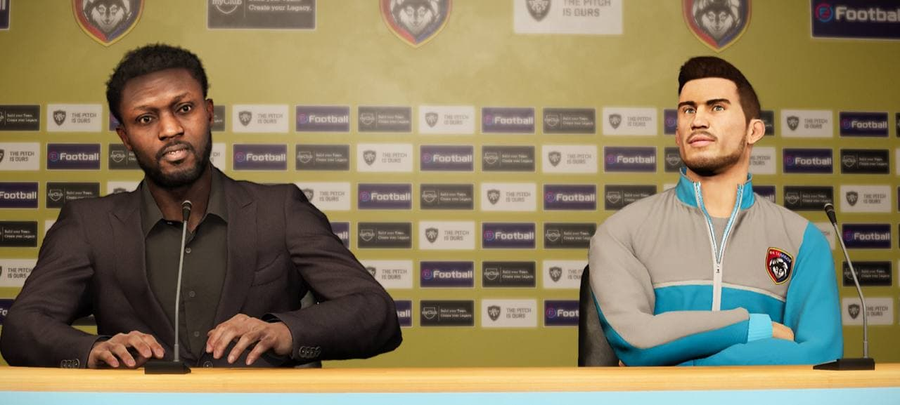
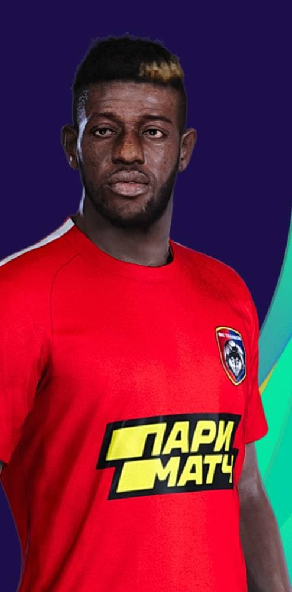
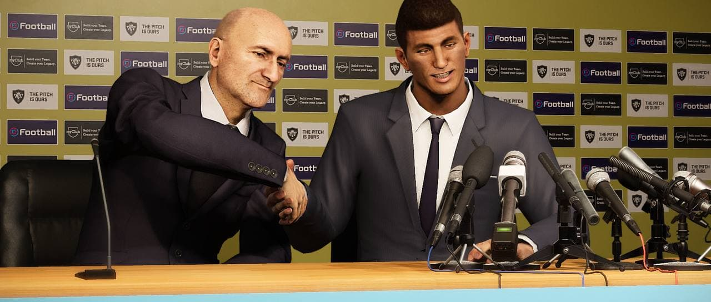
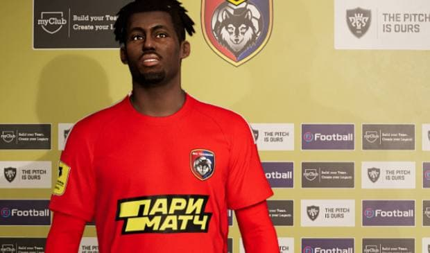
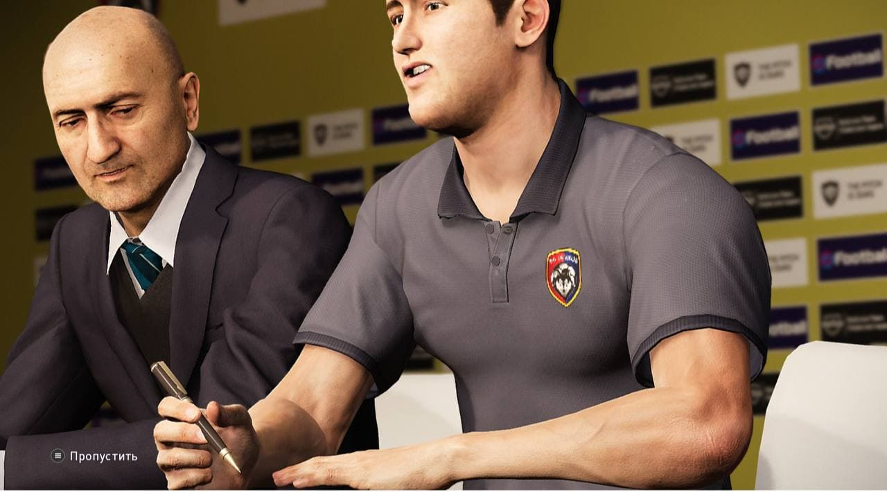
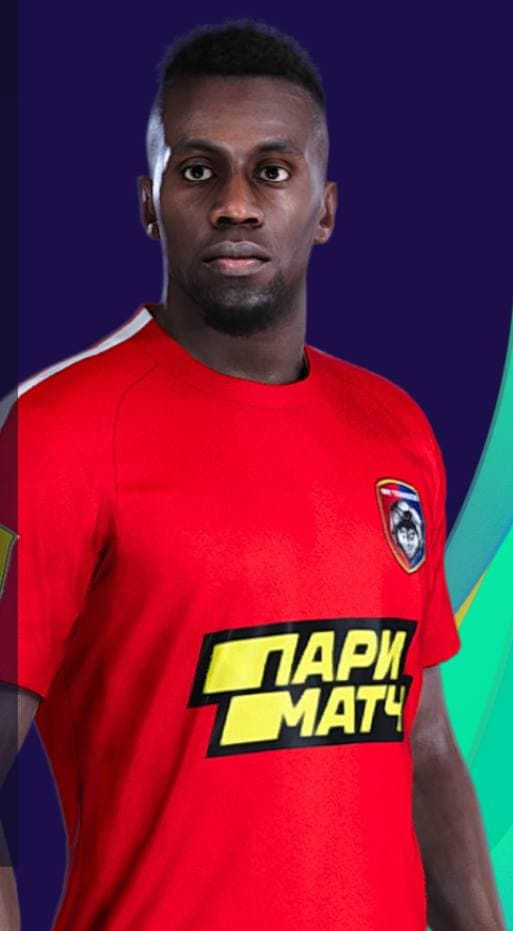

⚡️⚡️⚡️⚡️ОФИЦИАЛЬНО:СЕРГЕЙ ГЛУХОЙ ВОШЁЛ В ТРЕНЕРСКИЙ ШТАБ ФК ТАМБОВ
Мы рады объявить о сотрудничестве с Сергеем.В нашем клубе он будет занимать должность тренера по физподготовке футболистов.Раян и Дибала Кзэликов уже прокомментировали ситуацию:»Сергей-профессионал своего дело,ведь качать губы вот так вот-сложное занятие.»Также Сергей прокомментировал свое назначение:Невероятно,я счастлив оказаться здесь.Я сделаю все для того,чтобы игроки показывали себя вне поля,ой,простите,на поле.»Сергей составил расписание физических нагрузок для футболистов:
Понедельник:Все футболисты качают бицепс и трицепс,поднимая карандаш.
Вторник:Сергей вместе с Александром Кокориным смотрят на тренировку остальных футболистов в поднимании стула выше головы.
Среда:Сергей точечно показывает,как нужно лазать по виноградной лозе и не упасть.Остальные повторяют
Четверг:Все футболисты отказываются от еды и питья и занимаются сексом со своими любовницами до того момента,пока они не устанут(упражнения на технику и физику)
Пятница:Сергей показывает,как накачать ягодицы до нужного размера,после чего отправится в душ для дальнейшего восстановления
Суббота:Футболисты прыгают в воду с высоты 100 метров,после чего их задача доплыть до берега,где их будет ждать Сергей,который заставит их нырять глубже
Воскресенье:Футболисты получают отдых,где они крутят головой весь день,чтобы улучшить удары головой в игровых моментах.
С Сергеем был заключён 5-летний контракт.Влад также поприветствовал нового тренера и они забились на то,что вместе будут наблюдать за тренировками футболистов.
ДОБРО ПОЖАЛОВАТЬ,СЕРГЕЙ!!!!!!

⚡️⚡️⚡️ОФИЦИАЛЬНО:Маринато Гильерме перешёл в Тамбов на правах аренды.
Тамбов и Локомотив завершили сделку по переходу в нашу команду Маринато.Наши селекционеры лично встречались с Станиславом Черчесовым,чтобы узнать его мнение об игроке.Станислав предлагал Сослана Джанаева,но потом передумал,потому что понял,что если он перейдёт в Тамбов,то шашлыки будет делать Магомед Оздоев и такие шашлыки ему не нравятся.Аренда рассчитана на один год и не включает опцию выкупа.Станислав лично приехал в Тамбов из Венгрии,чтобы пожелать удачи русскому бразильцу.
ДОБРО ПОЖАЛОВАТЬ,МАРИНАТО!!!!

ОФИЦИАЛЬНО:ТАМБОВ ВЫКУПИЛ ШКОЛИКА У РЕАЛА
Наш клуб и Мадридский Реал договорились о трансфере Игоря.Клуб заплатит 300 тысяч евро,которые пойдут на покупку шампанского для Саши Кокорина.Филипп уже распиарил новость в своём Инстраграм.Флорентино Перес со слезами на глазах прощался с Игорем.Но волк не пожалел Флорентино и съел его,благодаря чему,платить за трансфер практически не пришлось.
ДОБРО ПОЖАЛОВАТЬ,ИГОРЬ!

⚡️⚡️⚡️⚡️⚡️НОВАЯ ФОРМА ДЛЯ ПФК ТАМБОВ УЖЕ В ПРОДАЖЕ!!!
Наш клуб представил новую экипировку команды на новый сезон.Мы благодарим за сотрудничество компанию Валентина Юдашкина,которые предоставили свой дизайн формы.Цена комплекта обойдётся в лям рублей,поэтому поторопитесь купить по скидке.Вот,что сказали авторы формы:»Мы вдохновлялись,скажем так,……..всем этим……спортивным…..»В создании формы также участвовал Йозу Мерино,который как настоящий европеец разбирается в моде.Дибала Кзэликов тоже прокомментировал создание новой формы:»ДАЙТЕ НАМ БАБКИ,СУКА,БАБКИ!!!»,поэтому если вы собираетесь посетить наш фирменный магазин,обязательно купите форму,иначе Дибала обидится на вас и сдаст Владу.Рекламой данной формы будет заниматься Филипп Бледный,показывая свои гримасы в ней.
⚡️⚡️⚡️⚡️⚡️ОФИЦИАЛЬНО:ФИЛИПП БЛЕДНЫЙ СТАЛ НАЧАЛЬНИКОМ ПРЕСС-СЛУЖБЫ ФК ТАМБОВ и промоутером команды
Наш клуб и Филипп заключили договор 🤝 о взаимном сотрудничестве между сторонами.Клуб заплатил Александру Невзорову 1 миллион рублей,чтобы выкупить контракт Филиппа.Филипп уже познакомился с Владом Чижовым,который сразу дал понять,что кидняков он тут не допустит и сразу оторвёт башку Венику.Серёга уже пожал руку Филиппу,но случайно ее сломал.Поэтому сейчас Филипп находится в одной из Тамбовских больниц.Филипп записал видео для болельщиков ФК Тамбов
ДОБРО ПОЖАЛОВАТЬ,ФИЛИПП!!

ОФИЦИАЛЬНО:БОРИС РОТЕНБЕРГ СТАЛ ИГРАЮЩИМ ТРЕНЕРОМ ФК ТАМБОВ.
Данная новость была объявлена на сегодняшней конференции,где главный тренер команды Раян Дудфлид сообщил об этом прессе:»Мы приветствуем в нашем тренерском штабе Бориса.Он в футболе с 3 лет.Его отец тренер.Он всю жизнь живет этим!
Также новость прокомментировал сам Борис Борисович:Если вы читали мою биографию и моего брата,то вы можете увидеть,что……,что……я всю жизнь….скажем так……..занимаюсь,ээээээээээээ…..скажем так,занимаюсь всем этим спортивным …..всю жизнь живу этим,короче.»
Методики Бориса будут применяться на командных собраниях,чтобы улучшить результаты команды.Борис будет совмещать должность игрока,тренера,тренера по физподготовке,президента,врача,водителя автобуса команды,ведь талантливый человек,талантлив во всем.Ещё раз поздравляем Бориса Борисовича и желаем удачи в его новых должностях

ОФИЦИАЛЬНО ⚡️⚡️:Ибраим Сангаре перешёл в Тамбов.
Наш Тамбовский клуб и ПСВ смогли договориться о сумме выкупа футболиста.После ухода Блеза Матуиди команде нужен был крепкий опорник.И она ее нашла в лице Ибраима.Игрок уже побывал на базе клуба,где встретился с Дибалой Кзэликовым,который увидел,что Ибраим также любит красить волосы.Дибала пообещал Ибраиму 10 лямчиков зарплату и поход в его барбершоп,чтобы сделать ему ирокез,тем самым пугать нападающих других команд
17.01.22
⚡️⚡️⚡️⚡️ОФИЦИАЛЬНО:АЛЕКСАНДР КОКОРИН ПОДПИСАЛ КОНТРАКТ С ФК ТАМБОВ НА ПОСТОЯННОЙ ОСНОВЕ!!!
Напомним,В прошлом году Александр уже выступал за «Волков»,забивая практически в каждом матче на футбол.Тамбов договорился с Фиорентиной о выкупе трансфера «футболиста»за 1,5 миллиона евро.Вся Флоренция плакала от ухода Александра,ведь болельщикам Фиорентины всегда нравился русский нападающий,что они ему сделали золотой унитаз.
Также ситуацию прокомментировал Раян Дудфлид:Безусловно,это истерический трансфер для нас.Я воодушевлен профессионализмом Александра и его трудолюбию.Он обязательно поможет нам стать чемпионом страны.Встречай,Тамбов!
Александр уже успел отпраздновать своё возвращение с его друзьями

⚡️ОФИЦИАЛЬНО:АРГЕНТИНСКИЙ ЗАЩИТНИК ФРАНКО ПЕРЕШЁЛ В ТАМБОВ
Наш клуб достиг договорённости с Аргентинским футболистом.Франко находился в статусе свободного агента,так как кроме нашего Тамбовского волка,он нах*й никому не нужен.Также Франко торговал наркотикам,судя по его лицу,но это не важно,Влад и Серега из него дурь выбьют.ДОБРО ПОЖАЛОВАТЬ,ФРАНКО!
Официально:Дмитрий Герман расторгнул контракт с Тамбовом.
Человек с двойным именем покидает клуб.Спасибо,Дмитрий!А желаем удачи Герману!

ОФИЦИАЛЬНО:СЕДРИК ГОГУА ВЕРНУЛСЯ В ТАМБОВ⚡️⚡️⚡️
ПФК ЦСКА и Тамбов договорились об аренде защитника Гогуа,который вернулся в стаю Волков из Тамбова.Седрик вернулся в родные края,чтобы конкурировать за основной состав с нашими опытными защитниками.Седрик уже забивал Спартаку за Тамбов,показывая Дмитрию Назарову,что птицу статься украл именно Седрик.Дибала Кзэликов уже встретился с футболистом,но из-за высокого роста Седрика Дибале пришлось вставать на стул и разговаривать с ним.ДОБРО ПОЖАЛОВАТЬ,СЕДРИК!!!

ОФИЦИАЛЬНО:⚡️⚡️⚡️СЕРГЕЙ ЕЩЕНКО ПЕРЕШЁЛ В ТАМБОВ ИЗ КРАСНОДАРА
Наш клуб договорился о выкупе трансфера вратаря команды Краснодар.Сергей является воспитанником той самой»крутой академии Галицкого».Мы приветствуем Сергея в клубе и надеемся,что он обсудил все детали контракта с Владом Чижовым,чтобы потом не было кидняка.Наш тренер вратарей Валерио Пагано уже занялся развитием футболиста.ДОБРО ПОЖАЛОВАТЬ,СЕРГЕЙ!!!
Официально:Родион Сямук покидает Тамбов.
После 100 пропущенных мячей из 100 на тренировке Родион покидает нашу команду.Мы благодарим Родиона за его огромный вклад и желаем удачи в дальнейшей карьере!

Блез Матуиди перешёл в Тамбов!!!
Наш клуб наконец-таки нашёл игрока в центр поля.Это француз Матуиди,который с самого детства мечтал стать частью Тамбова.Игрок последовал примеру Бориса Ротенберга и решил перейти в самый сильный клуб мира.Игрока не представляли болельщикам,потому что все деньги на презентацию игроков ушли на презентацию Александра Кокорина.Дибала Кзэликов уже поприветствовал Блеза и поблагодарил за продуктивные переговоры.Так как игрок чернокожий,ему придётся поклониться в верности Тамбвоскому волку.Влад Чижов и Серега также одобрили трансфер.Тамбовские шейхи выделили огромные деньги на Зарплату футболиста.Теперь Блезу придётся отрабатывать свой контракт,а если нет,то он будет очередным лакомством для нашего волка.ДОБРО ПОЖАЛОВАТЬ,БЛЕЗ!!!

Александр Кокорин перешёл в аренду в Тамбов!!!!
ПФК Тамбов заключил годичное соглашение с нападающим итальянской Фиорентины Александром Кокориным.Для этого Дибала Кзэликов позвонил Нобелю Арустамяну,который благодаря его «отличным»знанием итальянского и борения за Ювентус,смог договориться с боссами «фиалок».Зарплату игрока будет оплачиваться контрактом Бориса Ротенберга,который,как я уже говорил,отказался от неё,ведь у него уже все есть.Александр уже приехал на базу клуба,где познакомился с игроками команды и провёл первую тренировку.Влад Чижов решил проверить скорость бега Александра и налетел с Серегой на него однако он получил п*зды от Александра стулом,тем самым показав Владу,что у него сезон закончился,а у Кокорина только начался.ДОБРО ПОЖАЛОВАТЬ,САША!!!!!

Тамбов выходит на новый уровень.
После покупки Бориса Ротенберга в команду у клуба открылись новые двери. В команду уже поступило около десятка предложений купить того или иного игрока. Например, известный вам Артём Дзюба со своим "товарищем" Азмуном, с ними захотел Али Соу, который только получил предложение от Зенита. Не один раскрученный клуб не мог обойтись без предложений этого игрока - Месси, только недавно дебютировав в ПСЖ, он уже хочет уйти из клуба, так как шейхи ПСЖ не могут обеспечить его хотелки, и он рассчитывает на помощь уральский шейхов. Нельзя забыть про Роналду, который набил татуировку с логотипом Тамбова на всё спину, а на груди надпись "Тамбов навеки". Но Тамбов нацелен на нормальных игроков, этих лохов брать клуб не собирается. Пока следующий трансфер под секретом, но всё, что известно - игрок из лучшей лиги - РПЛ.

Борис Ротенберг перешёл в Тамбов из Ювентуса
Борис Ротенберг ушёл на очередное повышение-в ПФК Тамбов.Его пригласил Дибала.только не тот,который Дибала,а тот,который Кзэликов.С Борисом было заключено 2-летнее соглашение.От зарплаты игрок отказался,потому что прекрасно понимал,кто ее заберёт.Борису даже не пришлось делать звонок отцу-он сам договорился о своём трансфере.Ювентус получил за трансфер Бориса пизды от Сереги.Влад же провёл пару китайских приемов Старой Сеньоре и вернул справедливость.Для того чтобы заманить Бориса одной силы Влада и Сереги было недостаточно.Для этого был прислан Артур Пирожков,который своим еблом смутил фанатов Ювентуса,заставив их отдать Бориса.Вообщем,ДОБРО ПОЖАЛОВАТЬ,БОРЯ!!!!

ФК Тамбов проигнорировал ситуацию с закрытием стадионов и всех спортивных мероприятий как другие клубы и будет собирать полный стадион в ПЕС 21
«Мы не будем не пускать наших болельщиков на стадион,хотя нам советовали так сделать.Мы ТАМБОВ!НАС НЕ ОСТАНОВИТЬ!»-дополнил Тамбовчанин из Саудовской Аравии.Для соблюдения антиковидных мер футбольный клуб будет выдавать маски по удвоенной цене,которые можно приобрести на нашем сайте,который «работает» с мая.Такую коммерческую идею предложил всем нам известный Влад Чижов,который закупил маски у семейства Ротенбергов. Также хотим дополнить,что всю информацию о ФК Тамбов и о его тратах вы не можете увидеть в «Общей папке»Влада

Даниил Липовой перешёл в Тамбов.
Как сообщает «банк Влада Чижова»,Фк Тамбов заключил годичное соглашение с Даниилом,которы выступал за Куинс Парк Рейнджерс,поэтому надо опасаться,чтобы Григорян не вы*бал его нахуй.Но с этим проблем не будет.Влад своих в обиду не даст.Сумма трансфера составила 350 миллионов рублей,которые все-таки дошли до Тамбова.Липовой будет играть под номером 0,потому что Дибала Кзэликов решил посмотреть свою оценку по его игре в российском кино.Даниилу придётся доказывать не только клубу и болельщикам свою состоятельность,но и Владу с Чижем,потому что они всякую «Липу»не любят,Закопать могут в Алешкинском все-таки.

Влад Чижов заключил поставку «своих»помидоров в ФК Тамбов.
Как сообщает канал «ЧЁ?»,Влад Чижов согласовал помидорский контракт с Тамбовом.Теперь игроки фк Тамбов будут питаться в столовой аджикой от Влада Чижова.Дибала Кзэликов уже встретился с Владом в офисе клуба и оформил сделку.Также ходили слухи о заключении соглашения с Сергеем Галицким,который уже упаковал свои семечки без скорлупы в фургон,но сделка в последний момент сорвалась.Влад просто избил Сергея,чтобы нейтрализовать конкурента.Серега его закопал в Алешкинском Лесу,привезя его из Краснодара,специально в Тушино. PS.Сергея нашли в фургоне с семечками без скорлупы.Серега не успел закопать,так как у Влада закончился сезон

Александр Саплинов перешёл в Тамбов.
Как сообщает Красный Тамбовский волк,Саплинов перешёл из Ромы в Тамбов.Жозе Моуринью и его Рома благодаря Александру остались в жалкой Серии А.Игрок забил 120 мячей,120 из которых он забил после постоянных попаданий в штанги.Сумма трансфера составила 1 кг упаковок витаминов для роста,потому что с его 1,95 м он уменьшился в росте и скоро догонит Гребнетора.Зарплату игрок будет получать от Дибалы Кзэликова,который заманил Александра предложением в 10 тысяч евро,которые он взял в кредит у банка,которым заведует Влад Чижов,поэтому никого кидалова не будет.